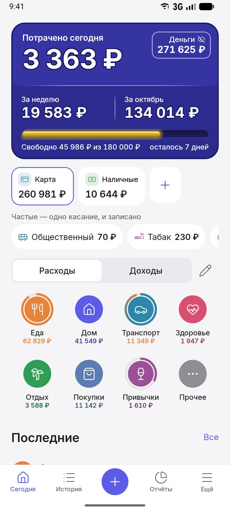
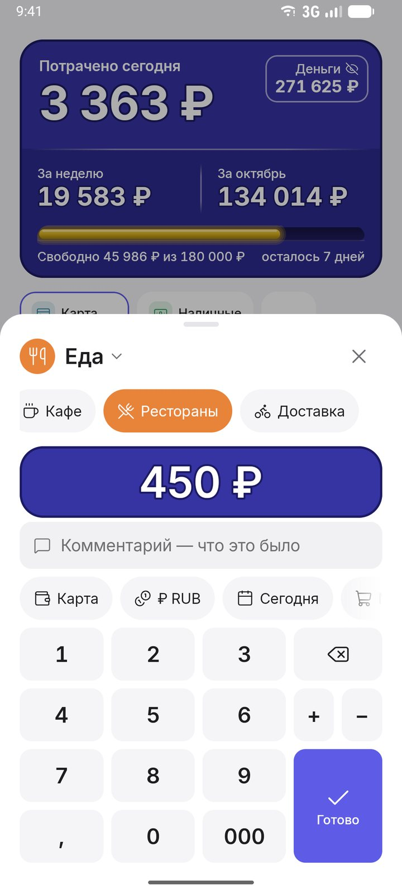
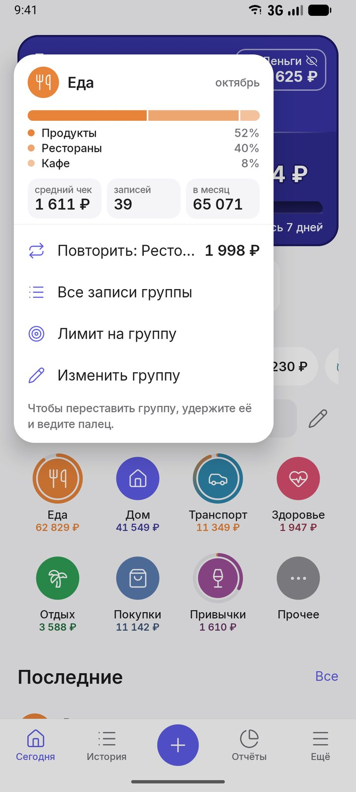
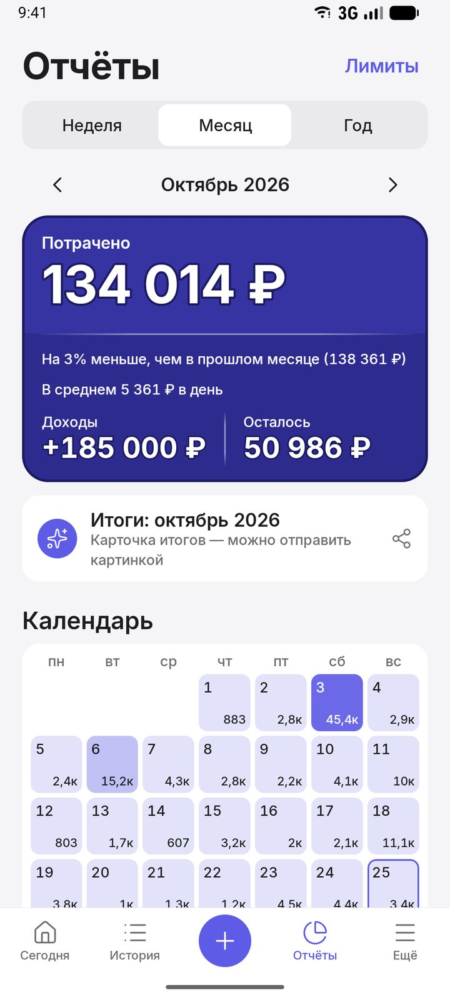
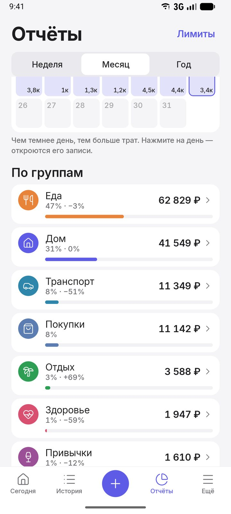
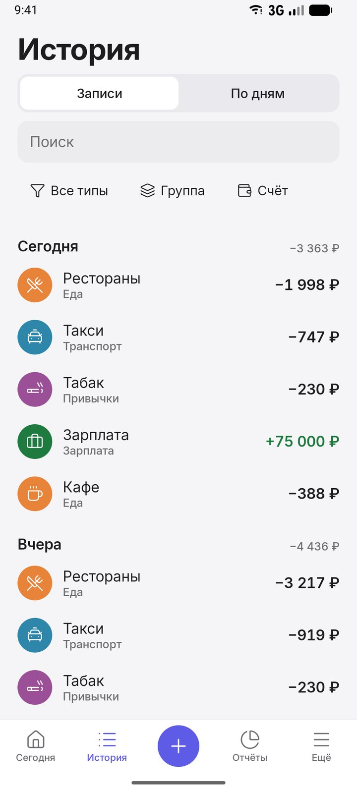

Деньги — с одного взгляда
Arvo показывает, сколько ушло сегодня, за неделю и за месяц, а трату записывает в два касания. Для себя и для всей семьи.

Трата — в два касания
Нажали на группу — подкатегория уже выбрана, осталось ввести сумму. Калькулятор в поле суммы, частые траты одним касанием, виджет на рабочем столе.

Удержите группу — всё о ней
Сколько ушло за месяц и сколько осталось до лимита, доли подкатегорий, средний чек и повтор последней траты.

Месяц — календарём трат
Неделя, месяц или год на одном экране: траты по дням, самые крупные покупки, в среднем в день. Итоги можно отправить картинкой и скрыть суммы.

Куда уходят деньги
Группы и подкатегории с лимитами. Полоса лимита спокойно меняет цвет от зелёного к оранжевому — без красных цифр и упрёков.

Все записи и поиск
Поиск по магазину, заметке и сумме. Трату можно разделить на две категории смахиванием, а ошибку — отменить.

Ещё в Arvo
Счета и валюты
Наличные, карты, накопительные и биржевые счета, у каждого своя валюта. Курсы обновляются сами.
Накопления
Цели со сроком и ставкой: проценты считаются по дням, по месяцам или в конце срока, Arvo подскажет нужный взнос.
Долги
Кто кому должен, частичные возвраты, проценты и напоминания о сроке.
Семья
Общий бюджет: общие счета и цели, кто сколько потратил. Любую запись можно скрыть.
Ваши данные
Регистрация не нужна, записи на телефоне. Код или отпечаток на вход, экспорт в Excel, импорт из CoinKeeper и CSV.
Проекты
Купили машину на перепродажу или делаете ремонт под сдачу — видно, сколько вложено, получено и какая доходность.
Arvo за 40 секунд
Вопросы
Arvo бесплатный?
Да, основное бесплатно и без рекламы: учёт трат и доходов, лимиты, накопления, долги, валюты, отчёты недели и месяца, экспорт. Платная подписка Pro добавляет облако и семью, ИИ-советника, сканы чеков без лимита и «Капитал».
Где хранятся мои данные?
На телефоне. Регистрация не нужна. Облако и копия в Google Диск — только если вы включите их сами. Подробно — в политике конфиденциальности.
Arvo читает SMS или подключается к банку?
Нет. Arvo не просит доступ к SMS, пароли и данные банковских карт. Траты записываете вы сами — это быстро: два касания.
Можно вести несколько валют?
Да. У каждого счёта своя валюта, итог — в вашей основной валюте по курсу на день записи. Есть и криптовалюты: USDT, BTC, ETH, TON.
Как перейти из другого приложения?
Arvo загружает записи из CoinKeeper и из файла CSV, который умеют сохранять почти все программы учёта.
Есть ли Arvo для iPhone?
Пока только Android (Android 8 и новее).
На каких языках?
Русский, английский, испанский, португальский, немецкий, французский, японский и вьетнамский — Arvo говорит на языке телефона.